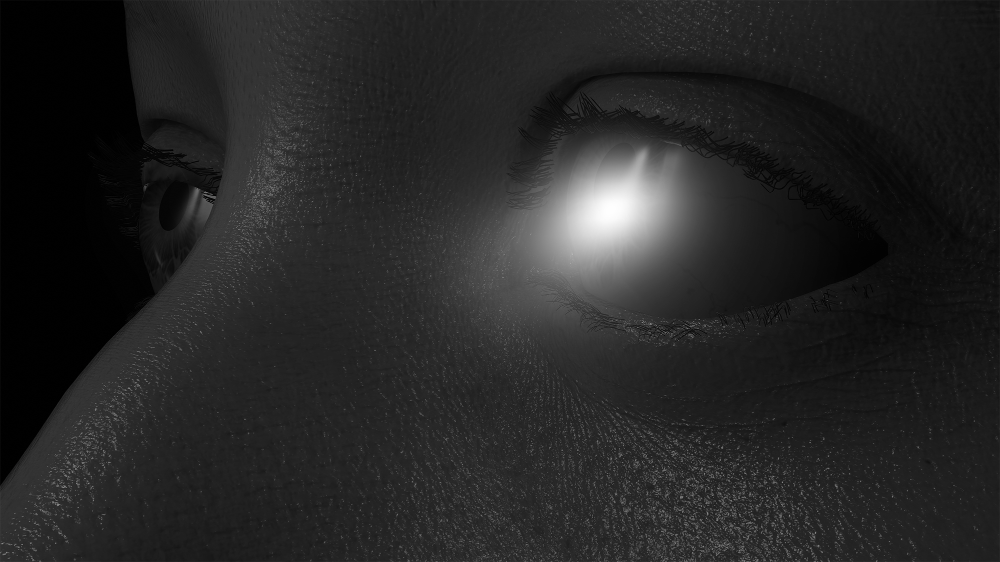
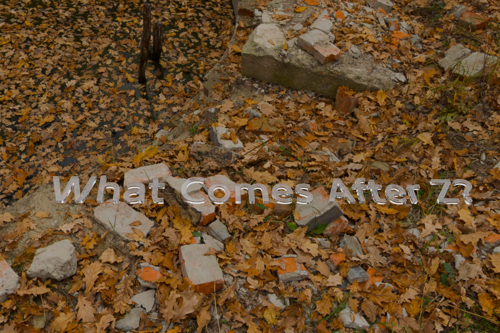
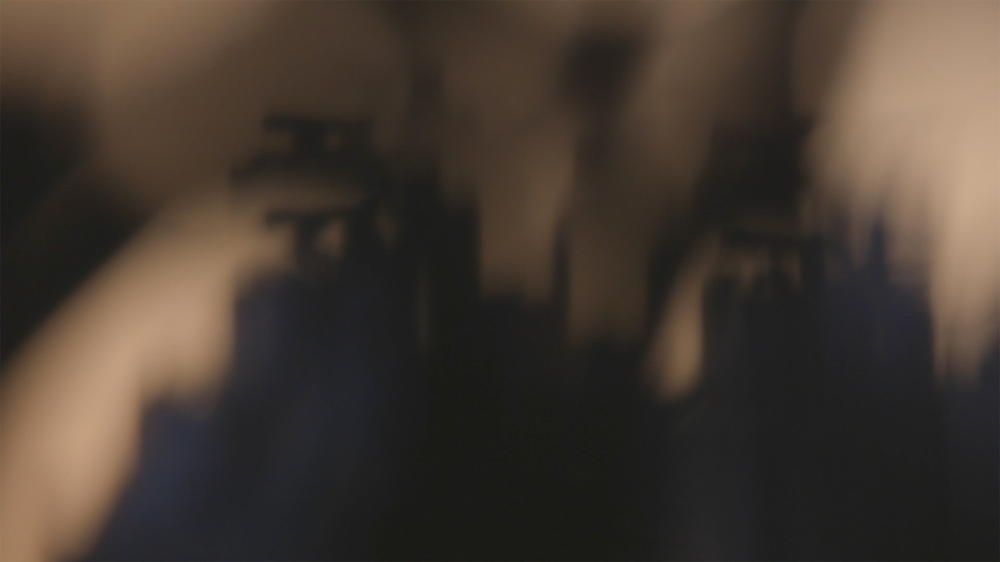

Fixation
Museum of the Moving Image
2024
A Hollywood rendering pipeline used by Meta to train eye-tracking systems gives a face to the manipulation of perception.

What Comes After Z?
2024
A freelance Ukrainian photographer narrates the movement of his images through computer vision training datasets and into the circuits of war.

[2.8, 9, 5, ∞]
2024
A tree blows across the view of a camera, interrupting its autofocusing algorithm.
